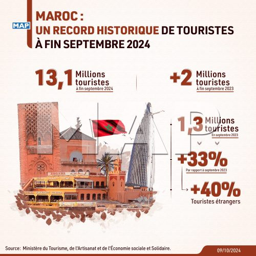
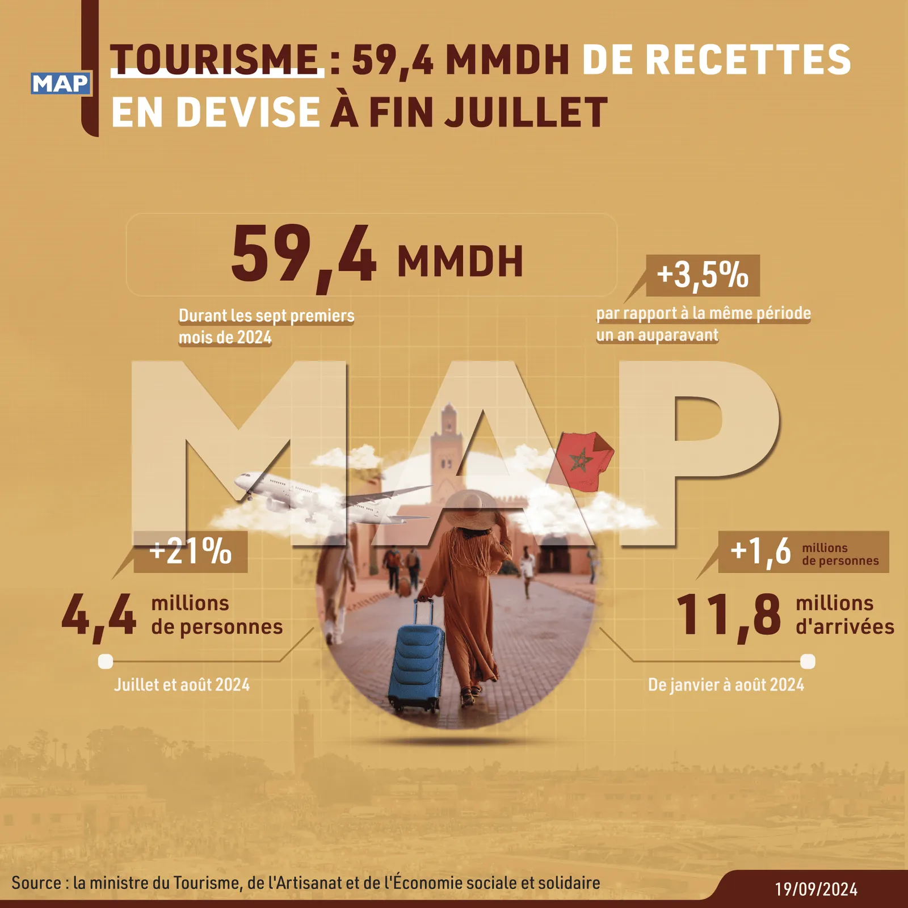
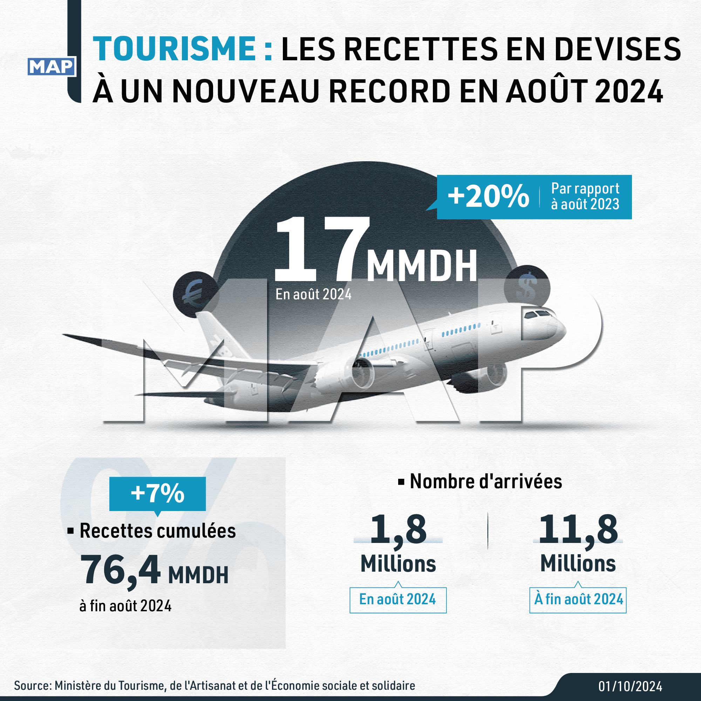
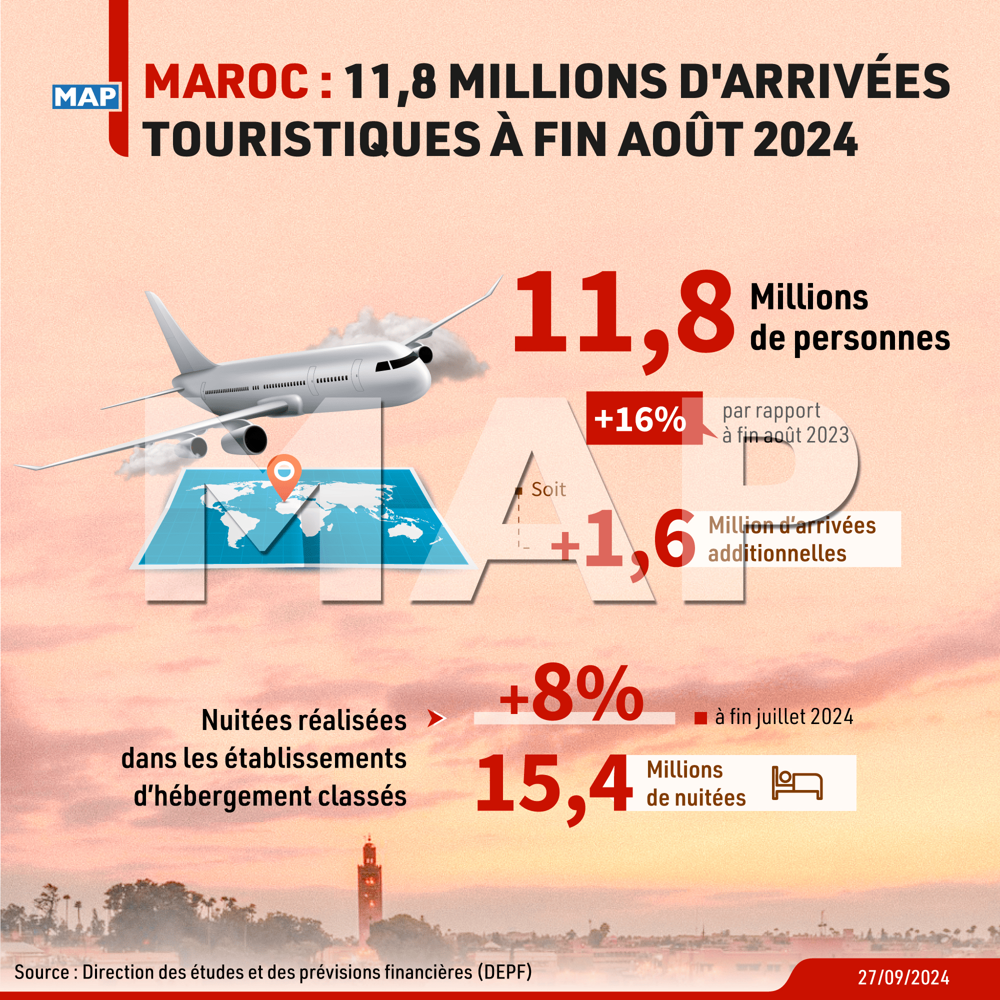

باختصار: استقبل المغرب 13.1 مليون سائح خلال الأشهر التسعة الأولى من 2024، في رقم قياسي تاريخي بحسب وزارة السياحة. وارتفع عدد السياح الأجانب بنسبة 41%، مدعوماً بخارطة طريق السياحة 2023-2026 التي رُصد لها 6.1 مليار درهم، وببرنامج GO SIYAHA.
في 2024، بلغ المغرب محطة فارقة باستقباله 13.1 مليون سائح خلال الأشهر التسعة الأولى من السنة، وفق الأرقام التي أعلنتها وزارة السياحة والصناعة التقليدية والاقتصاد الاجتماعي والتضامني. وهو رقم قياسي تاريخي جديد يتجاوز بكثير حصيلة السنوات الماضية، ويؤكد الجاذبية المتزايدة للمغرب على الساحة الدولية.
قفزة لافتة في عدد الزوار الأجانب
يعيش قطاع السياحة في المغرب نمواً لافتاً، تجسّده زيادة بنسبة 41% في عدد السياح الأجانب الوافدين مقارنة بالسنة الماضية. وبات هؤلاء الزوار يمثّلون 49% من إجمالي الوافدين. فيما يبقى المغاربة المقيمون بالخارج (MRE) شريحة محورية في السوق، بحصة 51% من الوافدين ونمو بنسبة 27%.

صيف استثنائي للقطاع السياحي
جاءت أشهر الصيف في صالح القطاع السياحي بامتياز، إذ استقبل المغرب 5.5 ملايين سائح بين يوليو وسبتمبر، منهم 2.6 مليون في يوليو وحده. وبفضل هذه الدينامية الصيفية، تجاوز عدد الزوار ما سُجّل في الفترة نفسها من 2023 بأكثر من مليوني زائر.
استراتيجية وطنية برؤية مستقبلية
يعود نجاح القطاع السياحي المغربي في جزء منه إلى سياسة إرادية طموحة، أبرزها خارطة طريق السياحة 2023-2026. وتهدف هذه الخطة الاستراتيجية إلى جعل السياحة ركيزة اقتصادية مستدامة، باستثمار ضخم يبلغ 6.1 مليار درهم، مع التركيز على تحسين تجربة الزائر وبناء منظومة سياحية أكثر تنوعاً وابتكاراً.
ومن أبرز هذه المبادرات برنامج GO SIYAHA، الذي أُطلق في 2024 بميزانية 720 مليون درهم لدعم 1700 مقاولة سياحية. ويمكن لوكالات الأسفار الاستفادة منه لتمويل تحوّلها الرقمي، كما نوضّح في مقالنا حول Travelife، البرنامج المعتمد لدى Maroc PME (GO SIYAHA).
كما يُعدّ المغرب من الدول القليلة التي تستفيد من برنامج قُطري مع منظمة التعاون الاقتصادي والتنمية (OCDE). وتسعى هذه الشراكة، القائمة منذ 2015، إلى دعم الإصلاحات في عدة قطاعات حيوية، من بينها السياحة.



بهذه النتائج اللافتة، سواء في أعداد الوافدين الدوليين أو في المبادرات المحلية، يتّجه المغرب نحو ترسيخ مكانته وجهةً سياحية من الصف الأول. وهذا النمو، المدعوم بسياسات مبتكرة واستراتيجيات مدروسة وإصلاحات طموحة، يبشّر بمستقبل واعد للسياحة المغربية، التي تظل رافعة أساسية للاقتصاد الوطني.
ولمزيد من التفاصيل، اكتشفوا العوامل الرئيسية وراء النمو السياحي في المغرب عام 2024. ولمواكبة هذا الارتفاع في الطلب، يمكن لوكالات الأسفار الاعتماد على برنامج إدارة تجارية مصمَّم لاحتياجاتها.
الأسئلة الشائعة
كم عدد السياح الذين زاروا المغرب في 2024؟
بحسب وزارة السياحة، استقبل المغرب 13.1 مليون سائح خلال الأشهر التسعة الأولى من 2024، في رقم قياسي تاريخي. ويمثّل السياح الأجانب 49% من الوافدين بنمو بلغ 41%، بينما يمثّل المغاربة المقيمون بالخارج 51% بنمو بلغ 27%.
ما هو برنامج GO SIYAHA؟
GO SIYAHA برنامج حكومي أُطلق في 2024 ضمن خارطة طريق السياحة 2023-2026. ويهدف، بميزانية تبلغ 720 مليون درهم، إلى دعم 1700 مقاولة سياحية مغربية، من بينها وكالات الأسفار، في مشاريع التطوير والتحديث.
ما هي خارطة طريق السياحة 2023-2026 في المغرب؟
هي الخطة الاستراتيجية التي اعتمدها المغرب لجعل السياحة ركيزة اقتصادية مستدامة. وتتضمن استثماراً بقيمة 6.1 مليار درهم، وتركّز على تحسين تجربة الزائر وبناء منظومة سياحية أكثر تنوعاً وابتكاراً، كما تشمل مبادرات مثل برنامج GO SIYAHA.